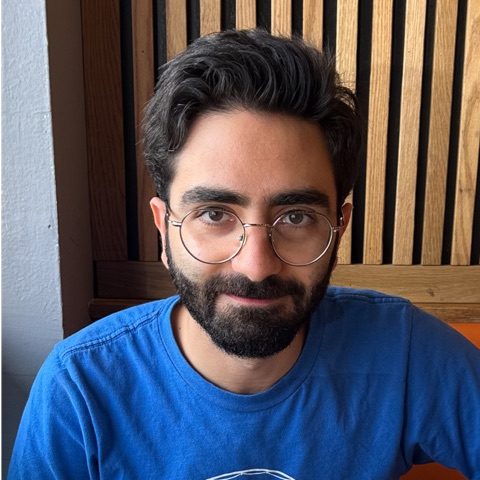

Apple — Software Engineer Intern Connectivity, Cellular & Satellite (CCS) · Cupertino, CA
Jun–Aug 2026

AI/ML Engineer & PhD Candidate — Wireless Systems
Institute for the Wireless Internet of Things, Northeastern University · Boston, MA
Apple — Software Engineer Intern Connectivity, Cellular & Satellite (CCS) · Cupertino, CA
Jun–Aug 2026
Research Assistant — WiNES Lab, Northeastern University Advisor: Prof. Tommaso Melodia · AI channel modeling, digital twins, real-time testbeds
2022–Present
Research Assistant — Telecommunications Innovation Lab, University of Tehran Advisor: Prof. Maryam Sabbaghian · Multi-agent RL for mmWave aerial base stations
2021–2022
June 2026
Our team won a Special Award for Innovation in the NSF SpectrumX Student Data & Algorithm Competition for 5G signal detection on VLA spectrum measurements.
June 2026
AIRMap accepted to IEEE Transactions on Wireless Communications.
June 2026
Joined Apple as a Software Engineer Intern on the Connectivity, Cellular & Satellite (CCS) team.
May 2026
GENESIS — our agentic-AI framework for autonomous 6G RAN — released as a preprint.
March 2026
Demoed real-time wireless digital twins at the AI-RAN Alliance booth, MWC 2026 (Barcelona).
November 2025
AIRMap won the Best Demonstration Award at the NYU Wireless Brooklyn 6G Summit.
October 2024
Gave an oral presentation and a live demo of our multi-modal seizure-prediction framework at IEEE Body Sensor Networks (BSN) (Chicago).
October 2024
Paper presented at IEEE CAMAD (Athens).
January 2024
SeizNet presented at IEEE WONS (Chamonix, France).
AIRMap: AI-Generated Radio Maps for Wireless Digital Twins Wireless AI & Digital Twins Best Demo Award
IEEE Transactions on Wireless Communications · 2026
GENESIS: Harnessing AI Agents for Autonomous 6G RAN Synthesis, Research, and Testing Wireless AI & Digital Twins
arXiv preprint · 2026
AI-Assisted Agile Propagation Modeling for Real-Time Digital Twin Wireless Networks Wireless AI & Digital Twins
IEEE CAMAD · 2024
SeizNet: An AI-Enabled Implantable Sensor Network System for Seizure Prediction Biomedical AI & Seizure Prediction
IEEE WONS · 2024
A Multi-Modal Non-Invasive Deep Learning Framework for Progressive Prediction of Seizures Biomedical AI & Seizure Prediction
IEEE Body Sensor Networks (BSN) · 2024
Systems and Methods for Predicting an Onset of a Neurological Event in a Human or Animal Biomedical AI & Seizure Prediction Patent
U.S. Patent Application No. 19/094,041 · 2025
Ph.D. & M.S., Electrical Engineering — Northeastern University Boston, MA · GPA 3.9 / 4.0
2022–Present
B.S., Electrical Engineering — University of Tehran Communication Systems · Major GPA 3.81
2022